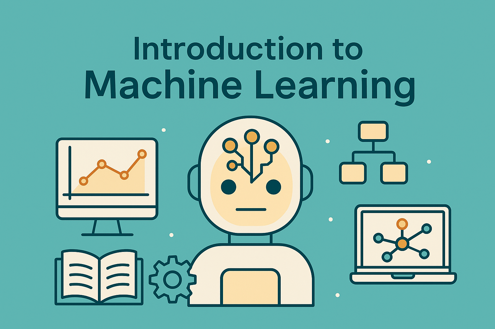

Introductory Guide to Machine Learning and Visualization
What is Machine Learning and How Machines Learn From Data
Machine learning is a method that allows computers to learn patterns from data so they can make predictions or decisions without being manually programmed for every situation. Instead of giving the computer exact rules, we provide many examples, and the model analyzes the data to understand how the inputs relate to the outputs. As it processes more information, it adjusts and improves its internal patterns, becoming better at tasks like recognizing images, predicting trends, filtering spam, or recommending content. Machines learn from data by identifying relationships, finding structure, and refining their predictions based on what they have seen.
People and Industries behind Machine Learning
People from many backgrounds contribute to the development of machine learning, including data scientists, engineers, statisticians, and researchers who work together to collect data, build models, and turn ideas into real solutions. Many industries rely on this teamwork, such as healthcare using it for early diagnosis, finance for spotting unusual transactions, retail for tailoring recommendations, transportation for improving autonomous systems, and entertainment for suggesting content. Because so many fields depend on data to guide decisions, machine learning has become an important part of improving accuracy, efficiency, and innovation across everyday technology and services.

Getting Started with ML
Getting started with machine learning is easier than it seems once you understand the basic steps. Most beginners start by learning a bit of Python, since it’s the most common language used in ML. From there, you can explore essential libraries like NumPy for handling data, Pandas for organizing datasets, Matplotlib or Seaborn for visualization, and Scikit-learn for building simple models.